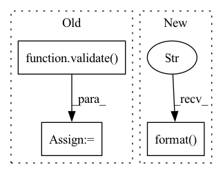

Pattern ID :24115
Before Change
train(train_loader, model, criterion, optimizer, epoch, local_rank, args)
// evaluate on validation set
acc1 = validate( val_loader, model, criterion, local_rank, args)
// remember best acc@1 and save checkpoint
is_best = acc1 > best_acc1
best_acc1 = max(acc1, best_acc1)
if args.local_rank == 0:After Change
if args.local_rank == 0:
print(
"Training Epoch: {epoch} [{trained_samples}/{total_samples}]\tLoss: {:0.4f}\tLR: {:0.6f}".format(
reduced_loss,
optimizer.param_groups[0]["lr"],
epoch=epoch,
trained_samples=step * args.batch_size + len(images),
total_samples=len(train_loader.dataset)
) )
// validate after every epoch
validate(test_loader, model, criterion, local_rank, args)
In pattern: SUPERPATTERN
Frequency: 4
Non-data size: 3
Instances Fragment ID: 74831637
Project Name: rentainhe/pytorch-distributed-training
Commit Name: 924a65892510a4cf1352ee408d6186344043f3a4
Time: 2021-01-05
Author: 596106517@qq.com
File Name: distributed.py
M Class Name: AnonimousClass
N Class Name: AnonimousClass
M Method Name: main_worker(3)
N Method Name: main_worker(3)
M Parent Class:
N Parent Class:
M File Name: distributed.py
N File Name: distributed.py
M Start Line: 60
M End Line: 111
N Start Line: 41
N End Line: 110
Before Change
// evaluate on test set
model.load_state_dict(torch.load(logger.get_checkpoint_path("best")))
print("Test on target domain:")
_, test_mAP = validate( test_loader, model, target_dataset.query, target_dataset.gallery, device,
cmc_flag=True, rerank=args.rerank)
print("test mAP on target = {}".format(test_mAP))
logger.close()
After Change
shutil.copy(logger.get_checkpoint_path(epoch), logger.get_checkpoint_path("best"))
best_test_mAP = max(test_mAP, best_test_mAP)
print("best mAP on target = {}".format( best_test_mAP) )
logger.close()
Fragment ID: 74831639
Project Name: thuml/transfer-learning-library
Commit Name: 91cc646b6e3c004ef8e2aba07ee26ef7b652116f
Time: 2021-09-03
Author: chenbx18@mails.tsinghua.edu.cn
File Name: examples/domain_adaptation/reid/baseline_cluster.py
M Class Name: AnonimousClass
N Class Name: AnonimousClass
M Method Name: main(1)
N Method Name: main(1)
M Parent Class:
N Parent Class:
M File Name: examples/domain_adaptation/reid/baseline_cluster.py
N File Name: examples/domain_adaptation/reid/baseline_cluster.py
M Start Line: 37
M End Line: 156
N Start Line: 89
N End Line: 162
Before Change
// evaluate on test set
model_1_ema.load_state_dict(torch.load(logger.get_checkpoint_path("best")))
print("Test on target domain:")
_, test_mAP = validate( test_loader, model_1_ema, target_dataset.query, target_dataset.gallery, device,
cmc_flag=True, rerank=args.rerank)
print("test mAP on target = {}".format(test_mAP))
print("oracle mAP on target = {}".format(best_test_mAP))
logger.close()
After Change
torch.save(model_2_ema.state_dict(), logger.get_checkpoint_path("best"))
best_test_mAP = test_mAP_2
print("best mAP on target = {}".format( best_test_mAP) )
logger.close()
Fragment ID: 74831638
Project Name: thuml/transfer-learning-library
Commit Name: 91cc646b6e3c004ef8e2aba07ee26ef7b652116f
Time: 2021-09-03
Author: chenbx18@mails.tsinghua.edu.cn
File Name: examples/domain_adaptation/reid/mmt.py
M Class Name: AnonimousClass
N Class Name: AnonimousClass
M Method Name: main(1)
N Method Name: main(1)
M Parent Class:
N Parent Class:
M File Name: examples/domain_adaptation/reid/mmt.py
N File Name: examples/domain_adaptation/reid/mmt.py
M Start Line: 39
M End Line: 164
N Start Line: 120
N End Line: 173
Before Change
train(train_iter, classifier, bss_module, optimizer, epoch, args)
lr_scheduler.step()
// evaluate on validation set
acc1 = validate( val_loader, classifier, args)
// remember best acc@1 and save checkpoint
torch.save(classifier.state_dict(), logger.get_checkpoint_path("latest"))
if acc1 > best_acc1:After Change
num_workers=args.workers, drop_last=True)
train_iter = ForeverDataIterator(train_loader)
val_loader = DataLoader(val_dataset, batch_size=args.batch_size, shuffle=False, num_workers=args.workers)
print("training dataset size: {} test dataset size: {}".format( len(train_dataset), len(val_dataset)) )
// create model
print("=> using pre-trained model "{}"".format(args.arch)) Fragment ID: 74831641
Project Name: thuml/transfer-learning-library
Commit Name: 052625393790ff6b5ffcffb9f29a68670054ea93
Time: 2021-08-01
Author: 13126830206@163.com
File Name: examples/finetune/image_classification/bss.py
M Class Name: AnonimousClass
N Class Name: AnonimousClass
M Method Name: main(1)
N Method Name: main(1)
M Parent Class:
N Parent Class:
M File Name: examples/finetune/image_classification/bss.py
N File Name: examples/finetune/image_classification/bss.py
M Start Line: 46
M End Line: 100
N Start Line: 46
N End Line: 86